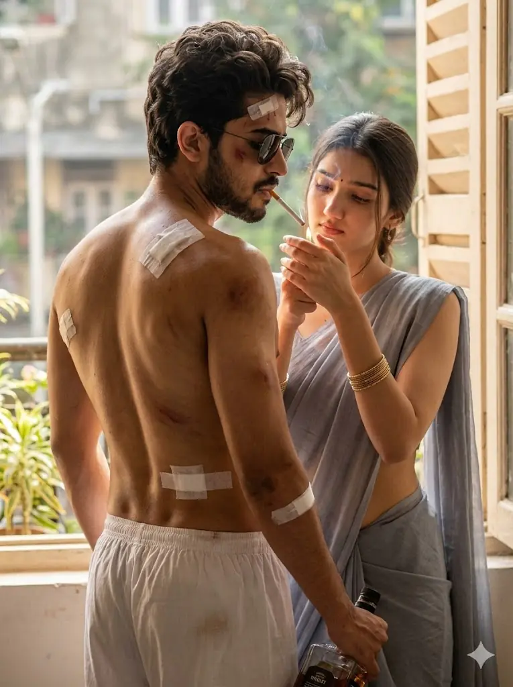
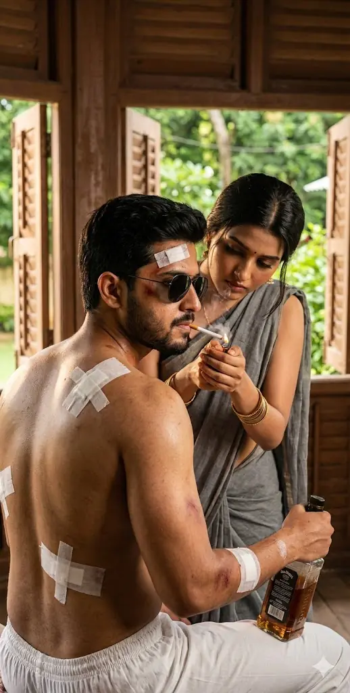
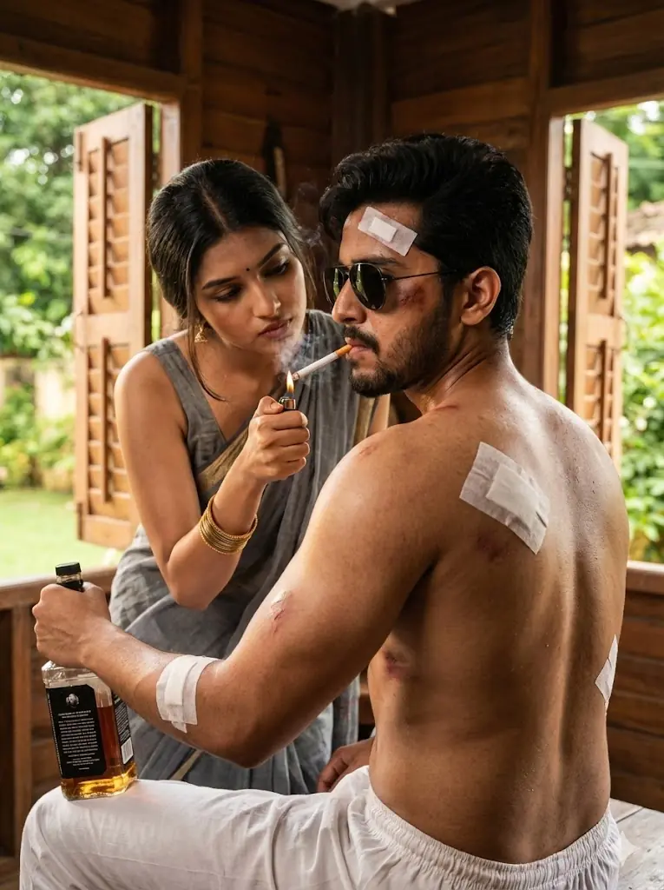

The Spirit movie is the most awaited film of Superstar Prabhas, directed by Sandeep Reddy Vanga. The first look poster has created a huge trend on social media. Everyone loves the dark, intense, and police officer look of Prabhas.
If you are a fan of Prabhas and want to create your own Spirit Movie 3D AI photos, you are in the right place. In this article, I will give you the best Google Gemini Prompts to create these viral images for free. You can add your name and face to these photos easily.
What is the Spirit Movie AI Trend?
In the official Spirit movie poster, Prabhas looks very dangerous and stylish. He has long hair, a beard, and a police background. Social media users on Instagram and YouTube are creating their own versions of this poster using AI tools like Google Gemini and Bing Image Creator.
Want more awesome prompts?
Join our community and get the latest viral prompts daily.
Follow on Instagram



The Intense Police Officer Look (Most Popular)
This prompt creates a realistic image of a police officer sitting on a jeep or chair, looking very strong like Prabhas.
Copy This Prompt:
“Create a realistic 3D image of a 25-year-old Indian boy sitting on a police jeep bonnet. He is wearing a tight khaki police uniform with black sunglasses and black boots. He has a stylish beard and long hair like actor Prabhas in the movie ‘Spirit’. He is holding a gun in one hand. The background is dark and smoky with red lights. Behind him, the text ‘SPIRIT’ is written in big bold red 3D neon letters. The boy’s nameplate on the uniform says ‘YOUR NAME’. High quality, 4k cinematic look.”
Prompt 2: The Spirit Movie Poster Style (Back View)
This prompt is based on the viral first-look poster where the actor is shirtless and wounded.
Copy This Prompt:
“A cinematic back-view shot of a muscular man standing in a dark room. He is shirtless and has bandages on his back and shoulders, looking wounded but strong. He has long messy hair. He is holding a bottle in one hand. The lighting is dramatic and moody. On the wall in front of him, the text ‘SPIRIT’ is written in a rough, gritty font. The atmosphere is intense. 4k resolution, realistic style.”
Prompt 3: Stylish Cop with Gun
Use this prompt for a cool, action-hero vibe with your name clearly visible.
Copy This Prompt:
“A 3D illustration of a handsome young man dressed as a high-ranking police officer. He is standing confidently with a pistol in his hand. He is wearing aviator sunglasses. The background features a police station setting with a signboard that says ‘SPIRIT MOVIE’. The man is wearing a belt with the name ‘YOUR NAME’ written on the buckle in glowing golden letters. Intense expression, movie poster style.”
Tips for Better Results
- Change the Age: You can change “25-year-old” to your actual age.
- Add Details: If you want a specific hairstyle or shirt color, add it to the prompt.
- Face Swap: Gemini creates a fictional face. To make it look exactly like you, you can use a face-swap tool like Remaker AI after generating the image.
Conclusion
The Spirit movie craze is just starting! By using these Gemini prompts, you can join the trend and show your love for Prabhas. These images are perfect for your Instagram DP, WhatsApp status, or Reels cover.
If you liked these prompts, share this article with your friends. Keep visiting promptseen.com for more trending AI photo editing prompts!